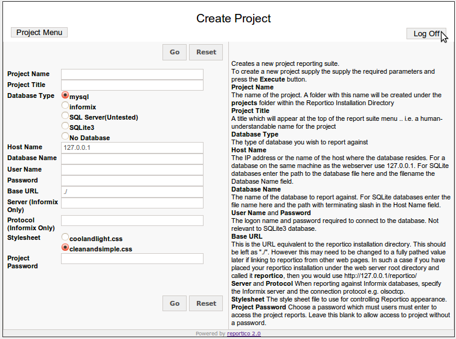
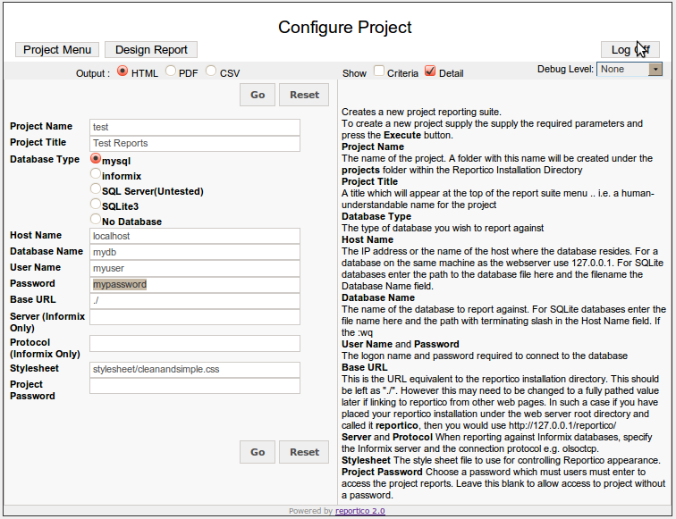
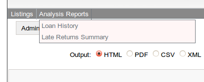

Projects
What is a project?
A project is a collection of report definition files that are linked by a menu and
a configuration file and that are collected within a single directory below the
Reportico projects directory. A project will generally report against data in a single database. Separate projects may be created
to allow reporting against different databases or you may wish to create a set of reports
suitable for some users and another set with maybe more sensitive
information available to other users.
This requires different proejcts to be set up.
By default Reportico comes with
the tutorials project directory that contain the example reports.
Creating a new project
To create a new project, you will need to logon as Administrator on the main Administration screen. You should see a page like this :-

Select the Create A New Project option. You should be presented with the following screen:-

To create a project you need to follow the onscreen instructions and specify the details of the database which you are to report on. After proving the relevant details press the Execute button. If successful a new project folder is created under the Reportico projects area with the configuration details in file config.ini and a default menu configuration.
Database Type
Reportico currently uses the PHP PDO libraries to access MySQL, PostgreSQL, SQLite 3, Oracle databases. Reportico also talls to Oracle using the PHP oci8 extension.
Project Password
Note the prompt for a project password. If one is specified, then users who are not logged in as administratr will be prompted for this password to access the reports in the project. A password may be added or modified for ap roject at any time using the project configuration option in the next section.
Stylesheet
Note that there are two system stylesheets supplied. The default one as seen in this documentation is cleanandsimple.css. A slightly bluer version called coolandlight.css is also provided. You may create your own ones in the stylesheet folder and specify them during project configuration in the next section.
Project Configuration Files
The configuration information entered for a project is stored in the file config.php file below the directory project/{project_name>}.
For a full description of all parameters see Appendix 1 - Reportico Project Configuration parameters.
Configuring a project
Once a project is created you can change the parameters at any time, such as th eproject password, the stylesheet, the database access details etc by choosing the Configure Project. You can access this configuration option either by navigating to the Admnistration Page and choosing the Configure Parameters for Project option or by running the project by choosing the Run Project Report Suite option and then pressing the Configure Project button.
A page similar to the following will apear :-

Customising a project menu
Each project area contains a file controlling what reports are presented to the user.
This menu definition is provided in the menu.php file.
By default, when you create a project from the main admin page then a default menu definition is created which sets up the new project menu to show menu options for all the reports you create there. It looks somethig like this :-
<?
$menu_title = "Project Title";
$menu = array (
array ( "language" => "en_gb", "report" => ".*\.xml", "title" => "<AUTO>" )
);
?>
However, this may be modified to individually specify the reports and to allow you to control the order and format of the menu. The example
tutorials menu.php looks as so :
<?php
$menu_title = "DVD Store Reporting System";
$menu = array (
array ( "report" => "HEADER", "title" => "Listing Reports" ),
array ( "report" => "tut1_1_films.xml", "title" => "Film Listing - Tutorial1 Stage1" ),
array ( "report" => "tut1_2_films.xml", "title" => "Film Listing - Tutorial1 Stage2" ),
array ( "report" => "tut1_3_films.xml", "title" => "Film Listing - Tutorial1 Stage3" ),
array ( "report" => "tut1_4_films.xml", "title" => "Film Listing - Tutorial1 Stage4" ),
array ( "report" => "tut1_5_films.xml", "title" => "Film Listing - Tutorial1 Stage5" ),
array ( "report" => "", "title" => "BLANKLINE" ),
array ( "report" => "tut2_1_films.xml", "title" => "Loan History - Tutorial2 Stage1" ),
array ( "report" => "tut2_2_films.xml", "title" => "Loan History - Tutorial2 Stage2" ),
array ( "report" => "tut2_3_films.xml", "title" => "Loan History - Tutorial2 Stage3" ),
array ( "report" => "", "title" => "LINE" ),
array ( "report" => "tut3_1_films.xml", "title" => "Country Popularity - Tutorial3 Stage1" ),
array ( "report" => "tut3_2_films.xml", "title" => "Country Popularity - Tutorial3 Stage2" ),
array ( "report" => "tut3_3_films.xml", "title" => "Country Popularity - Tutorial3 Stage3" )
);
?>
Adding dropdown menus

Drop down menus for report selection may be added to both the menu and criteria selection pages by adding a section to the menu.php file mentioned above. These menu options are even able to link to reports in other menus.
Just create an array named $dropdown_menu following the example below :-
$dropdown_menu = array(
array (
"project" => "tutorials",
"title" => "Listings",
"items" => array (
array ( "reportfile" => "tut1_films.xml" ),
array ( "reportfile" => "tut2_loanhistory.xml" )
)
),
array (
"project" => "tutorials",
"title" => "Analysis Reports",
"items" => array (
array ( "reportfile" => "tut3_monthreturns.xml") ,
array ( "reportfile" => "tut4_lateness.xml")
)
),
);
In this example two dropdown menus appear with titles of Listings and Analysis Reports. Each dropdown menu proints to the project defined in the "project" array element and creates dropdown menu items defined in the "items" subarray.
However if you are using dropdown menus you may want to not show any reports in the main menu screen. in this case create an empty $menu array in the menu.php file:
$menu = array ( );
Deleting a project
There is no administration option to remove a project.
Projects are created under the Reportico projects folder. To remove a project you need to remove the folder relating to your project under this folder.